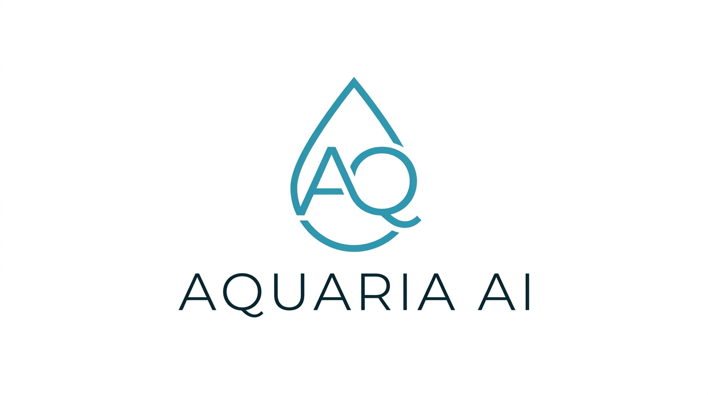

Aquaria AI pairs real-time water tracking with an AI assistant named Ariel — so every tank gets the expert care it deserves.

Just describe what you see — Ariel extracts pH, ammonia, nitrite, and 13 more parameters automatically. No forms, no dropdowns.
Ariel isn't just a chatbot — she powers every part of the app. She reads your logs, knows your fish, and drives personalized insights across your entire setup.
Ariel watches your parameter trends, flags problems early, and tells you exactly what to do — before your fish show signs of stress.
Ariel remembers your tank details, recent logs, inhabitants, and water profile. Just describe what you see — she'll handle the rest.
Switching from a spreadsheet? Import your entire parameter history with smart header matching and flexible date parsing.
Track fish, shrimp, corals, anemones, and plants. Get real-time compatibility warnings before adding new tank mates.
Log observations in plain English. Aquaria extracts measurements, actions, and tasks automatically — no forms to fill out.
Visualize nitrogen cycle, hardness, temperature and more. Multi-tank comparison charts help you spot patterns across setups.
AI extracts tasks from your notes and chats. Get nudged when a tank has been inactive, or when it's time to retest.
Document your tank's evolution. Snap photos from your camera or gallery, add notes, and build a visual history.
Beginner to expert — get curated aquarium tips matched to your experience level and water type, every day.
Ariel continuously learns from expert fishkeepers and community experience — so every answer reflects real-world wisdom, not just textbook advice.
Name it, set the size and water type, and add your inhabitants.
Type naturally — "pH 7.2, ammonia 0, did a 25% water change" — and Aquaria parses it all.
Ask anything. She knows your tank and gives personalized, actionable advice.
Most aquarium apps give generic advice. Ariel is different. She sees your water trends, knows every fish in your tank, understands your tap water profile, and remembers past conversations.
From basic nitrogen cycle monitoring to advanced reef chemistry — Aquaria tracks it all.